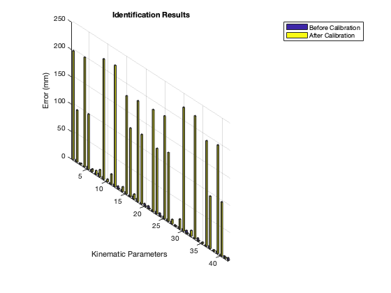

Contents
% TABATHA VISO - RBE521 - LEGGED ROBOTICS % Calibrates a hexapod parallel manipulator clear all format bank
DEFINE GIVENS
nominal values of kinematic parameters in mm
u_nom = [305.4001, -56.4357, -248.9644, -248.9644, -56.4357, 305.4001;... 111.1565, 320.0625, 208.9060, -208.9060, -320.0625, -111.1565;... 0,0,0,0,0,0]; s_nom = [92.1597, 27.055, -119.2146, -119.2146, 27.055, 92.1597;... 84.4488, 122.037, 37.58822, -37.5882, -122.037, -84.4488;... 0,0,0,0,0,0]; lo_nom = [604.8652, 604.8652, 604.8652, 604.8652, 604.8652, 604.8652]; kinparams_nom = [s_nom; u_nom; lo_nom]; % real values of kinematic parameters in mm u_real = [305.2599, -55.2814, -244.7954, -252.5755, -53.9678, 302.4266;... 115.0695, 322.9819, 208.0087, -211.8783, -320.6115, -109.4351;... 2.6210, 4.2181, 3.9365, -3.0128, 4.3181, 3.3812]; s_real = [96.6610, 22.2476, -122.4519, -120.6859, 24.7769, 91.3462;... 81.7602, 125.2511, 36.6453, -34.4565, -125.0489, -80.9866;... 1.0684, -0.5530, 4.3547, -4.9014, -4.8473, 0.2515]; lo_real = [604.4299, 607.2473, 600.4441, 605.9031, 604.5251, 600.0616]; kinparams_real = [s_real; u_real; lo_real];
STEP 1: choose m configurations
find configs on boundary
[~, all_boundary_points_1] = workspace(u_nom, s_nom, 800, false); selected_configs_indices_1 = randperm(size(all_boundary_points_1,1), 3); boundary_configs_1 = all_boundary_points_1(selected_configs_indices_1, :); [~, all_boundary_points_6] = workspace(u_nom, s_nom, 610, false); selected_configs_indices_6 = randperm(size(all_boundary_points_6,1), 3); boundary_configs_6 = all_boundary_points_6(selected_configs_indices_6, :); [~, all_boundary_points_2] = workspace(u_nom, s_nom, 700, false); selected_configs_indices_2 = randperm(size(all_boundary_points_2,1), 3); boundary_configs_2 = all_boundary_points_2(selected_configs_indices_2, :); [~, all_boundary_points_3] = workspace(u_nom, s_nom, 1000, false); selected_configs_indices_3 = randperm(size(all_boundary_points_3,1), 3); boundary_configs_3 = all_boundary_points_3(selected_configs_indices_3, :); [~, all_boundary_points_4] = workspace(u_nom, s_nom, 1090, false); selected_configs_indices_4 = randperm(size(all_boundary_points_4,1), 3); boundary_configs_4 = all_boundary_points_4(selected_configs_indices_4, :); [~, all_boundary_points_5] = workspace(u_nom, s_nom, 900, false); selected_configs_indices_5 = randperm(size(all_boundary_points_5,1), 3); boundary_configs_5 = all_boundary_points_5(selected_configs_indices_5, :); boundary_configs = [boundary_configs_1; boundary_configs_2; boundary_configs_3; boundary_configs_4; boundary_configs_5; boundary_configs_6]; % define the number of boundary configs we will use m = size(boundary_configs,1); fprintf('Step 1: The calibration will use %d configurations on the workspace boundary:\n', m); disp(boundary_configs) % return R matrix [~, ~, R, ~] = IK(boundary_configs(1,:)', s_nom, u_nom); for j = 1:m
STEP 2: use IK to obtain leg lengths
find leg lengths for boundary configs
l_nom(j,:)= IK(boundary_configs(j,:)', s_nom, u_nom);
end
Step 1: The calibration will use 18 configurations on the workspace boundary:
Columns 1 through 5
-25.00 -750.00 800.00 0 0
745.00 0 800.00 0 0
145.00 690.00 800.00 0 0
-610.00 -715.00 700.00 0 0
390.00 -685.00 700.00 0 0
-820.00 640.00 700.00 0 0
150.00 -585.00 1000.00 0 0
195.00 -355.00 1000.00 0 0
280.00 115.00 1000.00 0 0
255.00 -35.00 1090.00 0 0
335.00 -40.00 1090.00 0 0
165.00 -85.00 1090.00 0 0
130.00 535.00 900.00 0 0
680.00 -185.00 900.00 0 0
130.00 -665.00 900.00 0 0
770.00 -5.00 610.00 0 0
590.00 805.00 610.00 0 0
225.00 -950.00 610.00 0 0
Column 6
0
0
0
0
0
0
0
0
0
0
0
0
0
0
0
0
0
0
STEP 3: implement leg lengths
using nominal leg lengths, final "real" ee pose for boundary configs
delta_l = l_nom - repmat(lo_nom,m,1); l_real = delta_l + repmat(lo_real,m,1); fprintf('Step 2: The leg length variations obtained from IK are:\n') disp(delta_l) fprintf('Step 3: The implemented leg lengths are:\n') disp(l_real) for j=1:m
STEP 4: obtain real pose
p_real(j,:) = FK(boundary_configs(j,:)', l_real(j,:), s_real, u_real);
% find simulated real leg lengths for boundary configs,
l_real_check(j,:)= IK(p_real(j,:)', s_real, u_real);
end fprintf('Step 4: The simulated real configurations at the boundary are:\n') disp(p_real) fprintf('Back-Check: The "measured" simulated real leg lengths at the boundary are:\n') disp(l_real_check) % finding leg length variations from IK, nominal values delta_s = s_real - s_nom; delta_u = u_real - u_nom; delta_lo = lo_real - lo_nom; delta_kinparams = [delta_s; delta_u; delta_lo];
Step 2: The leg length variations obtained from IK are:
Columns 1 through 5
535.32 636.98 619.80 388.03 368.84
356.11 563.73 592.86 592.86 563.73
436.58 361.70 387.36 602.34 612.01
705.80 660.37 622.41 403.22 412.23
408.93 617.40 617.19 407.07 370.50
785.71 503.19 484.22 669.76 712.23
569.10 686.51 679.77 512.90 492.53
465.66 571.31 570.92 462.47 444.99
401.24 462.38 477.29 513.11 504.24
487.68 560.03 569.32 559.06 548.07
493.94 586.73 598.77 587.33 573.36
491.91 548.37 553.01 527.58 518.80
432.10 379.58 399.99 568.32 575.35
430.84 635.95 657.14 605.87 575.43
533.29 660.20 650.88 454.00 431.30
221.63 463.67 496.38 494.82 461.81
453.33 487.89 531.66 752.83 748.56
546.74 731.26 720.01 445.99 411.37
Column 6
499.63
356.11
471.39
676.33
372.17
810.09
542.17
447.80
407.33
485.97
491.99
487.76
459.30
421.25
501.64
221.30
493.22
501.80
Step 3: The implemented leg lengths are:
Columns 1 through 5
1139.75 1244.22 1220.24 993.94 973.36
960.54 1170.98 1193.30 1198.76 1168.25
1041.01 968.95 987.81 1208.25 1216.54
1310.23 1267.62 1222.85 1009.12 1016.75
1013.36 1224.65 1217.63 1012.97 975.03
1390.14 1110.44 1084.66 1275.67 1316.75
1173.53 1293.76 1280.21 1118.80 1097.05
1070.09 1178.56 1171.36 1068.37 1049.52
1005.67 1069.63 1077.74 1119.01 1108.76
1092.11 1167.28 1169.76 1164.96 1152.59
1098.37 1193.97 1199.22 1193.24 1177.88
1096.34 1155.62 1153.45 1133.48 1123.32
1036.53 986.83 1000.43 1174.22 1179.87
1035.27 1243.20 1257.58 1211.77 1179.95
1137.72 1267.45 1251.32 1059.90 1035.83
826.06 1070.92 1096.82 1100.72 1066.34
1057.76 1095.13 1132.11 1358.73 1353.08
1151.17 1338.51 1320.46 1051.89 1015.89
Column 6
1099.69
956.18
1071.45
1276.40
972.23
1410.15
1142.23
1047.86
1007.39
1086.03
1092.06
1087.82
1059.36
1021.32
1101.70
821.36
1093.28
1101.86
Step 4: The simulated real configurations at the boundary are:
Columns 1 through 5
21.31 -731.19 818.91 0.95 3.68
815.85 -8.22 731.30 1.93 -8.33
193.09 706.33 777.47 5.26 1.32
-587.92 -672.18 757.99 11.69 4.64
444.65 -682.29 671.97 -5.15 2.25
-805.27 690.77 667.95 0.65 0.43
208.57 -569.93 1000.66 -0.95 -0.77
253.62 -342.63 993.94 -0.55 -3.66
340.72 124.54 982.89 1.75 -5.52
319.11 -23.01 1076.31 0.84 -5.43
402.17 -30.40 1070.46 0.76 -5.63
225.85 -70.28 1082.97 0.72 -5.13
181.32 550.97 883.89 3.82 -1.89
752.71 -188.60 842.93 -0.85 -6.89
184.32 -650.63 903.26 -1.03 1.00
834.07 -19.09 522.38 2.70 -11.25
635.91 818.09 541.44 22.28 12.67
277.34 -943.44 598.82 -4.44 12.84
Column 6
-9.14
1.76
8.29
-10.96
-7.09
5.33
-6.73
-3.80
2.01
0.07
0.17
-0.70
6.56
-0.75
-7.68
2.08
8.65
-10.69
Back-Check: The "measured" simulated real leg lengths at the boundary are:
Columns 1 through 5
1139.75 1244.22 1220.25 993.94 973.36
960.54 1170.98 1193.31 1198.76 1168.25
1041.01 968.94 987.81 1208.25 1216.54
1310.23 1267.62 1222.85 1009.12 1016.75
1013.35 1224.64 1217.64 1012.97 975.02
1390.13 1110.43 1084.67 1275.68 1316.76
1173.52 1293.75 1280.22 1118.81 1097.05
1070.09 1178.56 1171.37 1068.38 1049.52
1005.66 1069.63 1077.75 1119.02 1108.76
1092.10 1167.27 1169.77 1164.97 1152.59
1098.36 1193.97 1199.23 1193.25 1177.88
1096.32 1155.61 1153.46 1133.49 1123.32
1036.52 986.82 1000.44 1174.23 1179.87
1035.26 1243.20 1257.59 1211.78 1179.95
1137.71 1267.44 1251.33 1059.91 1035.83
826.05 1070.92 1096.83 1100.73 1066.34
1057.76 1095.13 1132.10 1358.73 1353.08
1151.17 1338.51 1320.46 1051.89 1015.89
Column 6
1099.69
956.17
1071.45
1276.39
972.22
1410.15
1142.23
1047.86
1007.38
1086.02
1092.05
1087.81
1059.36
1021.31
1101.69
821.36
1093.28
1101.86
STEP 5: obtain cost function
CF = @(x) cost_function(x, s_nom, u_nom, lo_nom, p_real, delta_l, R, m);
STEP 6: minimize the cost function
Set options for lsqnonlin
options = optimoptions('lsqnonlin', 'Algorithm', 'levenberg-marquardt', 'TolFun', 1e-40, 'StepTolerance', 1e-20, 'MaxFunctionEvaluations', 1e10, 'MaxIterations', 1e6); % optimize, using nominal kinematic parameters as initial guess [x, minimizedCF] = lsqnonlin(CF, delta_kinparams, [], [], options); % extract optimized variables s_nom, u_nom, and lo_nom s_calc = reshape(x(1:numel(s_nom)), size(s_nom)); u_calc = reshape(x(numel(s_nom)+1:numel(s_nom)+numel(u_nom)), size(u_nom)); lo_calc = reshape(x(numel(s_nom)+numel(u_nom)+1:end), size(lo_nom)); %print results of calibration fprintf('Calibration Results: The calibrated kinematic parameters are:\n'); fprintf('s:\n'); disp(s_calc); fprintf('u:\n'); disp(u_calc); fprintf('l:\n'); disp(lo_calc); fprintf('The minimized Cost Function value is: %d', minimizedCF); % plot errors before and after calibration num_params = 1:42; before_calibration = abs(kinparams_real - kinparams_nom); after_calibration = abs(kinparams_real - [s_calc; u_calc; lo_calc]); before_calibration = reshape(before_calibration, 42,1); after_calibration = reshape(after_calibration, 42, 1); results = [before_calibration, after_calibration]; figure; bar3(num_params, results, 'grouped'); ylabel('Kinematic Parameters'); zlabel('Error (mm)'); title('Identification Results'); legend('Before Calibration', 'After Calibration'); ylim([1 42]); %zlim([0 10]);
Local minimum possible.
lsqnonlin stopped because the relative size of the current step is less than
the value of the step size tolerance.
Calibration Results: The calibrated kinematic parameters are:
s:
Columns 1 through 5
-101.68 35.27 56.77 65.17 42.68
-12.96 -94.41 -88.58 85.04 101.26
-0.82 -5.24 -4.82 -5.33 -6.40
Column 6
-100.95
14.84
2.51
u:
Columns 1 through 5
105.28 -36.88 -60.82 -64.69 -43.31
14.21 101.45 80.80 -86.16 -96.41
-2.53 2.96 5.02 5.24 2.61
Column 6
104.32
-10.82
0.85
l:
Columns 1 through 5
597.39 598.45 599.14 606.92 606.88
Column 6
598.05
The minimized Cost Function value is: 59802249880772056